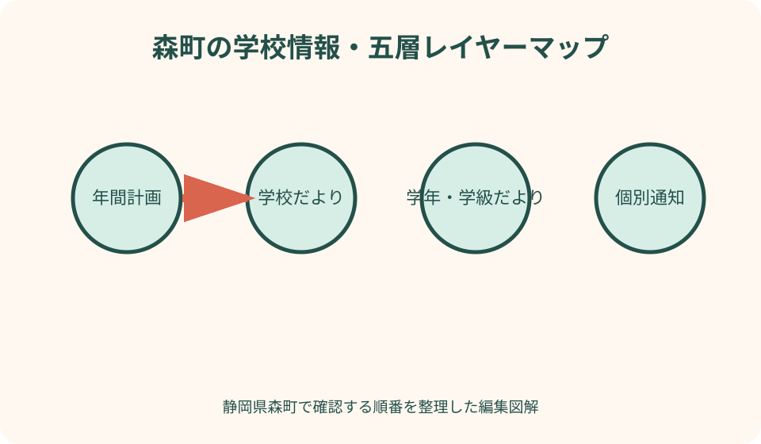
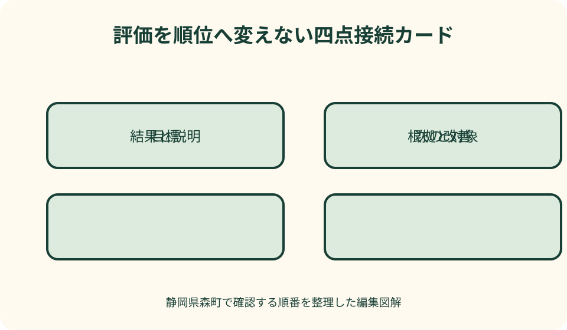

学校・就学・家庭記録｜最終確認 2026-08-10
静岡県森町の学校運営情報を保護者が読む｜学校だより・年間計画・学校評価の整理法
学校から届く情報は、学校だより、学年だより、年間計画、学校評価、学校運営協議会の報告など、名前も役割も異なります。古い年間予定だけを家族カレンダーへ写すと、行事変更や学年別の案内を見落としかねません。本稿では、森町の保護者が発行主体、対象期間、確定度、次の確認先を読み分け、家庭の行動へつなぐ方法を整理します。

編集イラスト結論：学校情報は順位づけではなく、家庭の行動を決めるために読む
学校運営情報を読む目的は、学校を点数で並べたり、一つの数値から良し悪しを決めたりすることではありません。子どもが通う学校の目標、年間の見通し、直近の変更、家庭へ求められる協力を理解し、必要な質問を作ることです。資料ごとの役割を分ければ、情報量が多くても次の行動を選びやすくなります。
学校だよりには、その時期の教育活動や学校からのメッセージが載る一方、すべての締切や個別条件が含まれるとは限りません。年間計画は長期予定を見渡す資料ですが、年度途中の変更を反映していない場合があります。どちらか一方を最終回答にせず、発行日が新しい個別通知や学校配信も照合します。
学校評価は、文部科学省が示すように、教育活動などの成果を検証し、学校運営の改善と発展を目指す取組です。数値だけを切り出して別の学校と比べる資料として扱うと、目標、対象者、質問方法、年度の条件が違うことを見落とします。自校が何を目指し、次に何を改善するのかという流れで読みます。
本稿の確認日は2026年8月10日です。学校の行事、配信方法、公開資料、相談の受付は変わり得ます。実際の予定は在籍校から届いた最新情報を確認し、学校ウェブサイトに掲載がないことだけを理由に、行事がない、提出が不要とは判断しないでください。
最初に作る資料台帳：発行者、日付、対象、版をそろえる
紙、メール、学校配信、ウェブ掲載を一度に整理するには、資料台帳を一枚作ります。資料名、発行者、発行日、対象学年、対象期間、受け取った方法、家族が対応する期限を一行に記します。添付ファイルだけを保存すると、どのメッセージに付いていたか分からなくなるため、本文や配信日時と結びます。
同じ名称の文書が毎月届く場合は、年度と月をファイル名へ入れます。「学校だより最新版」ではなく「2026年度_学校だより_09月_受信日」のようにすると、後から差し替えを確かめられます。紙は表紙右上に受領日を書き、古い版をすぐ捨てずに変更点を確認します。
兄弟姉妹がいる家庭では、学校名と学年を別欄にします。全校共通の通知、学年限定の案内、学級だけの連絡を混ぜると、対象でない提出や欠席連絡が生じます。家族カレンダーへ登録する前に、誰の予定かを色や頭文字で区別します。
個人名、出欠、健康情報、連絡先を含む資料は、一般公開資料と保存場所を分けます。家族共有アプリへ載せる際も、必要な人だけが見られるかを確かめます。学校の公開資料を保存することと、児童生徒が写る画面を外部へ再公開することは別の行為です。
森町の公式入口：学校教育課と小・中学校一覧を起点にする
森町公式サイトの学校教育課ページは、町の学校教育に関する担当を確認する入口です。町全体の制度や教育委員会への問い合わせと、在籍校の日常連絡を分けるときに使います。個別行事の時刻や持ち物は、担当課ページだけで確定せず、学校からの最新案内へ戻ります。
森町公式の小・中学校案内は、町内の学校を確認するための入口です。転居前後や入学時は、名称が似た検索結果から古い資料へ入らず、町公式ページから対象校の情報をたどります。ただし掲載構成やリンク先は変わり得るため、閲覧日を記録します。
町の総合教育会議資料や教育委員会の会議資料には、学校運営協議会や町全体の教育に関する説明が含まれることがあります。これは各家庭の行事予定表ではありません。町全体の方向や議論の背景を読む資料と、在籍校から届く実施案内を別々に保管します。
問い合わせ先が分からないときは、質問の種類を先に書きます。「来週の行事時刻」は学校、「町全体の学校制度」は学校教育課というように、分かる範囲で入口を選びます。窓口が違った場合は紹介先を記録し、同じ説明を繰り返さなくて済むよう相談要旨を短くまとめます。
学校だより：出来事の報告と直近の重点を読む
学校だよりは、校長など発行者の説明、学校行事の様子、生活上の呼び掛け、今後の予定を一つにまとめることが多い資料です。最初に発行月と対象を確認し、過去の報告、現在の重点、これからの依頼へ線を引いて分けます。写真や行事報告だけを読んで、末尾の期限を見落とさないようにします。
本文にある「予定」「予定しています」「決まりました」は、確定度が同じとは限りません。開催日が書かれていても、集合時刻、弁当、服装、雨天時の扱いは別紙で案内される場合があります。家族の行動に関係する語句を抜き出し、詳細通知の有無を台帳へ記します。
教育活動の紹介は、子どもとの会話の入口になります。「楽しかった？」だけでなく、「どの場面が印象に残ったか」「家で準備が必要なことはあるか」と尋ねます。だよりの写真に写っていないから参加していない、紹介されていないから学んでいない、と結論づけません。
学校だよりがウェブと紙の両方で出る場合は、内容と公開範囲が同一とは限りません。個人情報への配慮から、家庭配布版だけに載る内容も考えられます。ウェブ版を家族へ送る前に、紙面の追加事項を別メモにし、公開できない情報を添付しないようにします。
学年・学級だより：全校情報より狭い対象を見落とさない
学年だよりや学級だよりは、授業の進み方、持ち物、提出、学年行事など、対象を絞った情報が中心です。学校だよりの月間予定と日付が同じでも、集合場所や準備は学年文書の方が具体的な場合があります。対象学年と発行日を確認してから家族予定へ移します。
記載に違いが見つかったら、都合のよい方を採用しません。後から発行された資料が変更通知か、単なる記載範囲の違いかを確かめます。学校配信の本文に訂正が添えられている場合もあるため、添付ファイルだけでなく配信メッセージを読みます。
提出物は、提出日、子どもが書く欄、保護者が書く欄、提出方法に分けます。写真撮影して送る、紙で持参する、フォームへ入力するなど方法が違うと、期限に間に合っても未提出扱いになる可能性があります。分からない場合は担任など指定された連絡先へ確認します。
学級内だけで共有された内容を、地域のSNSや公開グループへ転載しないようにします。欠席した家庭へ伝える必要がある場合も、学校の配信再送や担任への確認を勧め、名簿や個別事情を含む画面をそのまま転送しない方法を選びます。
年間計画：一年の地図として使い、確定表とは扱わない
年間行事予定は、授業参観、面談、長期休業、運動会、修学旅行など大きな予定を早めに見渡す地図です。勤務調整や家族行事を考える土台になりますが、天候、会場、学校事情により変更される場合があります。カレンダーへ登録するときは「仮予定」の印を付けます。
一日単位の予定だけでなく、準備が始まる時期を読みます。面談希望の提出、健康調査、用品準備、旅行費用の案内などは、行事当日より前に届きます。年間表の行事名の横へ「詳細通知を待つ日」を一つ設けると、直前の慌てを減らせます。
年度初めの年間計画と、学期ごとの予定表を照合します。変わった日付は元の予定を消すだけでなく、変更日と情報源を残します。家族の誰が更新したかを記録すると、別のカレンダーに旧日程が残る問題を見つけやすくなります。
年間計画に載っていない活動が後から加わることもあります。空欄を「行事なし」と断定せず、学校だよりや配信を継続して確認します。反対に、前年にあった行事が今年も同じ時期にあるとは限らないため、過去のカレンダーは参考資料に留めます。
行事変更：最新情報、変更点、家庭の影響を三段で確認する
行事変更の連絡を受けたら、最初に発信元と送信日時を確認します。次に、変更前、変更後、変更理由、雨天時の再変更、持ち物、下校時刻のうち書かれている項目を抜き出します。件名だけを見て家族へ転送すると、弁当や送迎の変更が抜けることがあります。
家族カレンダーでは、旧予定を削除する前に取消印を付け、新予定へ情報源を添えます。勤務先や送迎担当へは「日付が変わった」だけでなく、集合と解散、保護者参加の要否を短く共有します。兄弟姉妹の予定や家庭の車の利用が重ならないかも確かめます。
災害、警報、感染状況など当日の判断が関わる場合、前夜の予定表だけで動かず、学校が示す確認時刻と連絡手段を確かめます。通信障害で配信を受け取れない可能性もあるため、学校が案内する代替確認方法があれば家族で共有します。
変更通知が見当たらない、家族間で受信状況が違う、文章の意味が取れないときは、推測で登校や欠席を決めません。学校が指定する連絡方法で、児童生徒名、学年、対象行事、確認した通知の日付を伝え、知りたい一点を具体的に尋ねます。
学校評価：数値の上下より、目標・根拠・改善をつなぐ
学校評価を読むときは、最初に評価の目的と対象年度を確認します。前年の結果を基に今年の改善を示す資料もあれば、同じ年度内の取組を振り返る資料もあります。「今年」と書かれた箇所が、評価した時期か、改善を実施する時期かを分けます。
次に、学校が掲げた目標、評価項目、使った根拠、結果、次の取組を横一列にします。アンケートの割合だけでは、質問文、回答者、回答数、実施時期が分かりません。数ポイントの差を優劣として読む前に、測っている内容と説明文を確認します。
文部科学省の学校評価ガイドラインは、自己評価、学校関係者評価などを整理し、学校運営の改善や説明、学校・家庭・地域の連携へつなげる考え方を示しています。評価は完成した成績表ではなく、目標を置き、確かめ、改善する循環の中にあります。
保護者が自校の資料を読む際は、「この結果は家庭で何をすべきか」だけに寄せません。学校、設置者、地域、家庭のどこが担う課題かを分けます。学校設備や人員に関する課題を、保護者や子どもの努力だけで埋める前提にはしないことが大切です。
自己評価・学校関係者評価・第三者評価を混同しない
自己評価は、学校の教職員が自らの教育活動や学校運営を評価するものです。学校が掲げた目標と実際の取組を照らす入口として読みます。「自己」とあるから信用できない、または学校が公表したから完全に客観的だ、という二択にはしません。評価方法と根拠の説明を確かめます。
学校関係者評価は、保護者や地域住民など学校に関係する人が、自己評価の結果などを踏まえて行う評価として整理されています。保護者アンケートそのものと同義とは限りません。委員構成、検討した資料、意見、学校の応答が示されていれば、そのつながりを読みます。
第三者評価は、外部の専門家を中心とする評価であり、どの学校でも毎年同じ形で行われるとは限りません。資料に「外部」「第三者」といった語があっても、正式な区分を文書の説明から確かめます。用語だけで評価の重みを推測しません。
三つの評価を一つの順位表へまとめると、実施主体と目的の違いが消えてしまいます。家庭の記録では、評価名、実施主体、対象年度、主な論点、次の改善、保護者が質問したい点を別の列へ置き、同じ尺度へ無理に換算しないようにします。
学校運営協議会：学校と地域が運営を話し合う仕組みとして読む
文部科学省は、コミュニティ・スクールを学校運営協議会制度を導入した学校として案内し、学校と地域住民などが力を合わせて学校運営に取り組む仕組みと説明しています。保護者会、PTA、学校評価と同じ組織だと決めつけず、それぞれの役割を資料で確認します。
協議会資料を読むときは、開催日、出席者の区分、協議事項、報告事項、決定や今後の確認を分けます。委員一人の発言を協議会全体の結論とは扱いません。会議要旨に決定と検討中の区別がある場合は、その表現を保ったまま家庭メモへ写します。
森町の総合教育会議資料には、学校運営協議会に関する記載が含まれる場合があります。町全体の資料で触れられた取組と、各校の具体的な開催・発信を分けて読みます。資料に学校名があるだけで、自分の子どもの行事や学級運営まで確定したとは考えません。
地域の協力募集や意見提出が示されたときは、対象者、申込方法、期限、個人情報の扱いを確認します。学校運営協議会の存在を、誰でも個別案件を持ち込める窓口だと解釈しません。子どもの個別相談は、学校が案内する相談経路へ分けます。
アンケート結果：質問文と回答者を見てから意味を考える
保護者アンケートの結果は、割合だけでなく質問文を読みます。「分かる」「おおむね分かる」をまとめた数値か、四段階の各回答を示した数値かで意味が変わります。前年と質問文が変わっていれば、単純な増減比較はできません。
回答者数、配布数、回答時期、対象学年が示されているかを確認します。回答率が低いから無意味、高いから全家庭の意見を表す、と一言で決めません。自由記述が要約されている場合は、個別意見と全体傾向を分けて読みます。
子ども、保護者、教職員が同じ項目へ答えていても、立場によって見える場面が異なります。数値の差を誰かの誤りとせず、「家庭へ伝わっていないのか」「学校内で経験が違うのか」という質問へ変えます。資料に説明がなければ、意見提出や面談の場で尋ねます。
家庭自身が回答した内容も、提出した時点の印象です。後から公表結果を見て、他の家庭が違うと責める材料にはしません。次年度に同じ質問が来たとき、自分の観察事実、子どもの意見、希望を分けて書けるよう、日常の小さな記録を残します。
資料を学校比較や評価ランキングにしない
学校ごとに公開形式や評価項目が違う場合、数値を横に並べても同じものを測っているとは限りません。回答者構成、年度、学校規模、重点目標が異なるため、順位づけは情報を単純化しすぎます。転居や就学を考える際も、一枚の評価表だけで学校を選べるとは限りません。
肯定回答の割合が高い項目も、改善が不要という意味ではありません。低い項目も、学校全体が悪いと断定する根拠にはなりません。学校がどの結果を課題と捉え、どの行動を計画し、翌年度にどう確かめるかを追います。
口コミや地域の評判を読む場合は、書かれた時期、投稿者が経験した学年、個別事情を確認できないことがあります。公式資料だけで全体が分かるわけではありませんが、匿名の一例を学校全体の特徴として広げないようにします。必要な配慮は学校へ直接相談します。
子どもの前で学校を点数化すると、本人が助けを求めにくくなる場合があります。「この学校は評価が低いから仕方ない」と諦めず、困っている具体的な時間、場所、相手、影響を聞きます。学校資料の読み取りと、個別の安全・支援相談を別の経路で進めます。
保護者が確認する五つの問い
第一の問いは「誰が、いつ、誰向けに出した資料か」です。学校、学年、学級、教育委員会、学校運営協議会では対象が異なります。発行主体が見つからない転載資料は、元のページや文書を探してから家庭予定に使います。
第二は「報告、予定、依頼、評価のどれか」です。行事の感想を読んで今後の参加が必要だと思い込んだり、目標をすでに達成した事実として受け取ったりしないよう、文の役割を分けます。一つの文書に複数の役割がある場合は色を変えます。
第三と第四は「いつまで有効か」「変更はどこから届くか」です。年間予定なら学期の詳細表、紙の案内なら学校配信など、後続情報の経路を探します。書かれていなければ、学校へ連絡する前に過去の配信や保護者向け案内を確認します。
第五は「家庭が今日することは何か」です。カレンダー登録、書類提出、子どもとの確認、質問の作成、保存のみのいずれかに分けます。読むたびに全家族へ長文転送するのではなく、担当者と期限がある行動だけを共有します。
学校へ質問する：資料名、箇所、知りたい一点を伝える
質問は「年間予定が分かりません」より、「4月配布の年間予定にある10月の行事について、8月配信で日付変更があったか確認したい」と具体化します。資料名、発行日、該当箇所、子どもの学年を先に伝えると、学校側も確認する文書を絞れます。
評価資料への質問は、数値への批判だけで始めず、「この項目の対象者と、次年度に確かめる方法を知りたい」と尋ねます。自分の家庭で起きた出来事は、評価全体の議論と混ぜず、日時、場面、子どもへの影響、希望する確認を別に伝えます。
電話、連絡帳、フォーム、面談のどれを使うかは、学校の案内と緊急度に合わせます。急ぎでない長い質問は、項目を三つ以内に整理し、回答を希望する時期を添えます。返答方法や時期を学校が保証できるとは限らないため、受領確認と次の連絡日を記録します。
回答後は、確認日、対応者の部署や役割、回答の要点、残った疑問を家庭メモへ残します。個人名を広く共有する必要はありません。口頭回答を自分の解釈で断定文に変えず、「こう理解したが合っているか」を必要に応じて再確認します。
家族カレンダーへ移す：情報源と確定度を残す
予定を登録するときは、行事名だけでなく対象の子、開始・終了、保護者参加、持ち物確認日、情報源を入れます。年間計画から写した予定には仮印、直近通知で確定したものには確定印を付けます。色だけに頼らず、文字でも状態を書きます。
送迎や勤務調整が必要な行事は、回答期限を別予定として登録します。行事当日だけを入れると、面談希望や参加可否の提出を忘れやすくなります。家族の担当が変わったら、カレンダーの参加者と通知先も更新します。
変更時は、家族全員が同じカレンダーを使っているとは限りません。紙の予定表、勤務先への申請、祖父母への依頼、送迎サービスなど、影響先をチェックします。更新した人が「どこまで直したか」を一行残すと、伝達漏れを見つけられます。
子ども自身にも、年齢に応じた方法で予定を伝えます。保護者の都合だけを話すのではなく、本人が準備する物、いつ先生へ確認するか、変更で不安な点を聞きます。家庭カレンダーは子どもの予定を管理するだけでなく、本人が見通しを持つ道具です。
欠席・未受信・紙の紛失：情報が欠けたときの代替経路
欠席日に配布物を受け取れなかったときは、友人家庭の写真だけで済ませず、学校が案内する方法で再配布や内容確認を依頼します。友人の用紙には氏名や学級情報が含まれる場合があるため、そのまま転送しない配慮が必要です。
学校配信が届かない場合は、迷惑メールだけでなく、登録アドレス、受信設定、アプリのログイン、保護者の登録区分を確認します。端末を替えた直後は特に注意します。設定を直しても過去分が自動で届くとは限らないため、必要な通知を学校へ具体的に尋ねます。
紙を紛失したら、記憶で提出内容を作らず、文書名と配布時期を伝えて再確認します。再発行できるか、ウェブ版があるかは資料ごとに異なります。署名済み書類や個人情報を含む紙を失くした場合は、その事実も学校へ伝えます。
日本語の文章を読み取りにくい、視覚や聴覚への配慮が必要、家族内で説明できる人がいない場合は、利用できる伝達方法を学校へ相談します。すべての希望に同じ形で対応できるとは限りませんが、どの情報が受け取れていないかを具体化すると相談しやすくなります。

固有図解案1：森町の学校情報・五層レイヤーマップ
一つ目の図解は、森町の山並みと太田川を背景に、学校情報を五枚の透明な層として重ねます。下から年間計画、学校だより、学年・学級だより、個別通知、当日配信とし、上へ行くほど対象と時期が具体的になる構成です。単純に上が常に優先ではなく、対象一致を確認する印を置きます。
各層には、発行者、発行日、対象、役割、変更経路の五つの確認窓を設けます。年間計画は一年の地図、学校だよりは直近の背景、個別通知は持ち物や回答、当日配信は実施判断という違いを、文書アイコンの形で示します。
図の右側には家庭カレンダーへ向かう矢印を置き、仮予定、確認待ち、確定、変更、終了の五状態を表示します。古い日付を消すだけでなく、変更元と更新者を残すことが視覚的に分かる設計です。兄弟姉妹は色ではなく名前札で区別します。
学校評価と学校運営協議会は、行事情報の層へ無理に入れず、左側に「学校の目標と改善を読む資料」として別枠を設けます。これにより、評価結果を明日の持ち物や行事確定情報と混同せず、役割の違いを一枚で理解できます。

固有図解案2：評価を順位へ変えない四点接続カード
二つ目の図解は、学校評価を「目標」「根拠」「結果」「次の改善」の四点で結ぶカードです。中央に順位表ではないことを示す横並び禁止の印を置き、一校の年度内の循環を時計回りに追います。数値は根拠の一部として小さく配置します。
根拠の欄には、アンケート、活動記録、観察などの例と、対象者、回答数、質問文、実施時期の確認欄を置きます。結果の欄には、数値と説明文を分離し、保護者が印象だけで意味を補わないよう、資料に書かれた解釈を記す空欄を設けます。
次の改善からは、学校、教育委員会、地域、家庭の四方向へ枝を出します。誰が担う課題かを一つに押し付けない図です。家庭の枝には、質問する、子どもの意見を聞く、協力募集を確認するという行動例だけを置き、成果を保証する表現は使いません。
下段には学校運営協議会の会議要旨を読む小窓を付け、報告、協議、決定、継続確認の四区分を示します。委員の一発言と会議の結論を分ける視覚記号を入れ、学校評価との関係は矢印で示しても同一制度とは描きません。
学校運営情報を保護者が読む良い点
資料を役割別に読む良い点は、家庭の予定変更を早く発見できることです。年間計画を地図、直近通知を更新情報として扱えば、古い日程だけで勤務や送迎を決める危険を減らせます。家族内の担当と情報源も明確になります。
学校評価を目標から改善までつなげると、肯定回答の割合だけでは見えない学校の意図を理解できます。保護者の質問も、「なぜ低いか」だけでなく、「何を根拠に、次にどう確かめるか」と具体的になります。対話の材料として使いやすくなります。
学校運営協議会の資料を読み分ければ、学校と地域が話し合う論点と、個別の子どもに関する相談を分けられます。地域協力へ参加したい場合も、募集対象や役割を確認してから動けます。制度名だけで期待や不満を膨らませずに済みます。
資料台帳は翌年度にも役立ちます。前年の日付をそのまま使うためではなく、いつ頃どの種類の案内が来たかを予測し、今年の未受信を見つける比較材料になります。年度が変わったら新しい台帳を作り、旧版には参考の印を付けます。
学校運営情報で注文したい点
学校ごとにウェブ掲載、紙配布、配信アプリの使い方が異なると、初めての保護者には最新情報の場所が分かりにくくなります。発行日、対象、変更の有無、問い合わせ先が各文書に揃っていれば、家庭の確認負担は小さくなります。
年間計画の変更が別の配信にだけ書かれると、元表を見続ける家族が見落とします。変更前後を一つの通知で示し、どの資料を更新すべきか明記してほしいところです。家庭側も、古い画面の切り抜きではなく、発信元と日時を添えて確認します。
学校評価では、数値だけでなく質問文、回答者、実施時期、学校の受け止め、次の行動が読めると理解が深まります。公表できない個別事情があることは前提にしつつ、保護者が誤った比較をしないための説明を資料内に置くことが望まれます。
学校運営協議会の会議要旨も、報告と決定、検討中の事項が分かれていると読みやすくなります。ただし、公開範囲には個人情報などの配慮が必要です。載っていない情報を隠していると推測せず、公開できる範囲と個別相談を分けて受け止めます。
代案・結論：全部を読めない家庭は三つの箱から始める
毎回すべての資料を細かく読む時間がない場合は、「期限がある」「予定が変わる」「子どもと話す」の三つの箱を作ります。受信した日に該当する箱へ入れ、期限と変更だけを先に家族カレンダーへ移します。背景説明や評価資料は、週末など確認する時刻を別に決めます。
紙とデジタルの管理を一つにできないときは、一覧だけを共通にします。紙の保管場所、配信件名、ウェブURLを台帳へ書けば、原本をすべて同じ場所へ複製する必要はありません。重要なのは、家族が最新版へ戻れる手掛かりを持つことです。
評価資料の読み方に迷ったら、数値分析を急がず、対象年度、目標、次の改善の三点だけを抜き出します。個別の困り事がある場合は、評価報告の公表を待たず、学校の相談経路へ具体的な事実を伝えます。全体資料が個別支援の開始条件ではありません。
結論として、学校運営情報は資料名ごとに役割を分け、発行日と対象を確認し、家庭の行動へ移します。学校間の順位ではなく、自校の目標と改善を理解するために読みます。今日の作業は、直近一か月の文書を三つの箱へ分けるところからで十分です。
大石の視点：森町の通学と家族動線へ予定を落とす
森町では、同じ開始時刻でも自宅から学校までの距離、送迎の要否、家族の勤務先への移動が違います。年間予定の日付だけを押さえるのではなく、集合時刻から逆算して家を出る時刻、送迎後の帰路、兄弟姉妹の予定まで一緒に確認します。
山間部や通信環境の条件によって、配信をすぐ受け取れない家庭も考えられます。学校が案内する代替連絡があるかを年度初めに確認し、家族の一人だけが情報を持つ状態を避けます。通信の遅れを家庭の注意不足と決めつけず、受信経路を複数持てるか検討します。
住まいを選ぶ場面で、公開された学校評価の数字だけを地域の価値へ置き換えることには慎重でありたいと思います。学校の取組は年度や子どもの状況で受け止め方が異なります。通学、生活圏、本人の希望、必要な配慮を具体的に確かめる方が、暮らしの判断に近づきます。
不動産の相談でも、学校情報を宣伝文句にして安心を約束すべきではありません。町公式の学校一覧、通学に関する正式な案内、在籍校の最新文書へ戻れるようにし、個別指定や将来の運営を断定しないことが大切です。家庭には確認日と質問先を残します。
家庭用の一ページ記録：読んだ情報と未確認を残す
一ページ記録の上部には、学校名、学年、対象月、最後に確認した日を書きます。中央を、確定予定、仮予定、提出、子どもと話す、学校へ質問の五列に分けます。資料を読んだだけで終えず、行動がない文書は保存欄へ移します。
各行には情報源を短く記します。「9月学校だより」「8月28日配信」「年間計画4月版」のように、家族が原文へ戻れる名前を使います。転送された画像だけを根拠にした場合は未確認印を付け、元の発信を探します。
学校評価の欄は、目標一つ、分かったこと一つ、次の改善一つ、質問一つに絞ります。全項目を書き写す必要はありません。子どもへ聞く場合は、評価への賛否を求めるのではなく、本人が経験した具体的な場面を聞きます。
月末に、完了した提出、変更済みの予定、回答を得た質問を閉じます。未確認事項は翌月へ移し、誰が確認するかを決めます。古い個人情報は保存期間と必要性を見直し、公開資料と家庭限定資料を混ぜないようにします。
まとめ：発行者・日付・対象・役割・変更経路を読む
静岡県森町の学校情報は、町の学校教育課と小・中学校案内を入口にし、在籍校から届く最新文書へ戻ります。学校だよりは直近の背景、年間計画は一年の地図、学年文書は対象を絞った実務、個別通知は具体的な回答や持ち物として整理します。
行事は変更される前提で、家族カレンダーに情報源と確定度を残します。旧予定を消すだけでなく、変更日、更新者、送迎や勤務への影響を確認します。未受信や紛失があれば、友人の画面転載ではなく学校が示す方法で原文を確かめます。
学校評価は目標、根拠、結果、改善をつなぎ、学校運営協議会は報告、協議、決定を分けて読みます。数値や会議の一発言から学校間の順位を作りません。個別の困り事は全体資料の評価とは分け、学校の相談経路へ事実を伝えます。
最初の一歩は、手元にある直近三件の資料へ発行者、発行日、対象、役割、変更経路を書き込むことです。そのうち家庭の行動が必要なものだけをカレンダーへ移し、分からない一点を在籍校へ確認できる形に整えてください。
公式情報・確認先
掲載内容は次の一次情報を基礎に整理しました。営業、料金、催し、交通は変わるため、出発前または手続き前にリンク先で最新情報を確認してください。
- 学校教育課（静岡県森町、2026-08-10確認）
- 小・中学校（静岡県森町、2026-08-10確認）
- 令和7年度第1回森町総合教育会議資料（静岡県森町、2026-08-10確認）
- 学校評価について（文部科学省、2026-08-10確認）
- 学校評価ガイドライン 平成28年改訂（文部科学省、2026-08-10確認）
- 学校評価の現状と今後の方向性について（文部科学省、2026-08-10確認）
- コミュニティ・スクール（学校運営協議会制度）（文部科学省、2026-08-10確認）